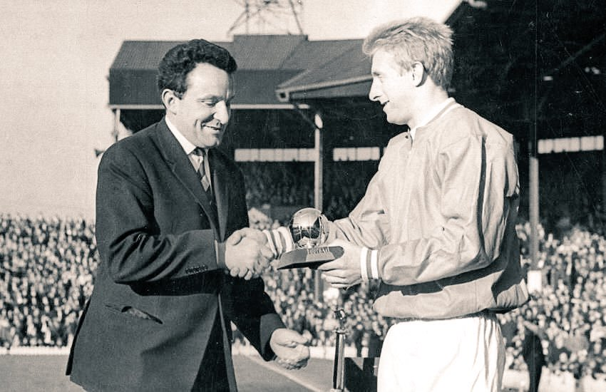
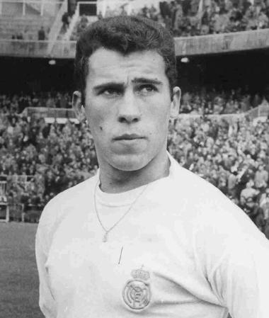

Denis LAW - 1964

- Law devient en 1964 le Ballon d'or, et ce à l’âge de 24 ans.
Surnommé "The King" ou "The Lawman" par ses supporteurs ou encore "Denis the menace" par ses adversaires, Law sera le premier (et le seul) écossais à obtenir ce trophée
Nationalité : Ecossaise
Né le : 24 février 1940, à Aberdeen (ECO)
Taille : 1,76
Poids : 69 kg
Poste : attaquant
Clubs : attaquant.
Clubs : Huddersfield Town (1955-1960), Manchester City (1960-1961), Torino (1961-1962), Manchester United (1962-1973) et Manchester City (1973-1974)
Palmarès de joueur :Championnat d'Angleterre 1965 et 1967 ; Coupe d'Angleterre 1963
Bilan en club : 602 matchs, 303 buts
Bilan en équipe nationale : : 55 sélections A, 30 buts (1958-1974)
Bilan en phase finale de Coupe du monde : 1 participation, 1 match (1974)
Palmarès Ballon d'Or : vainqueur en 1964
Classement du Ballon d’Or France Football 1964 :
Denis Law (Ecosse / Manchester United),
61 pts.
Luis Suarez (Espagne / Inter Milan),
43 pts.

Amancio Amaro (Espagne / Real Madrid),
38 pts.
Retour à l'accueil